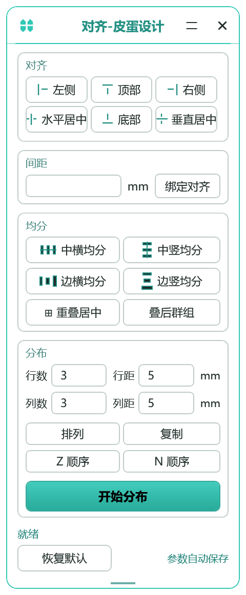

让画布，留给作品
常用工具采用紧凑窗口，可悬浮贴边。需要更多内容时，调整窗口高度。
LITTLE TOOLS. BIG POSSIBILITIES.
皮蛋插件 / FOR CORELDRAW
把重复交给工具，把时间留给灵感。
图形排版 / 生产加工 / 图文输出
Windows 7 SP1 / 10·64 位
官方安装器 · 持续更新
不止多一个按钮。
是让整套工作，都顺起来。
A WORKSPACE THAT FEELS LIKE YOU
紧凑工具窗，把画布还给创作。
深浅外观、自定义颜色，让常用工具看起来也合心意。
从六向对齐到行列分布，常用操作集中在一张紧凑面板里。间距、行列数和复制方式，按你的习惯设置。

这里先试风格。
安装后可在设置中心自定义。
常用工具采用紧凑窗口，可悬浮贴边。需要更多内容时，调整窗口高度。
标准工具窗保留标题与底部状态区，默认值、保存提示有固定位置。
工具参数自动记录，常用组合可存预设；在“存盘”中导入、导出分享。
界面预览来自工具布局与主题渲染；未加载用户文档内容。浏览器中的配色选择仅用于展示。
ONE TOOLKIT. MANY POSSIBILITIES.
按工作内容找工具，也可以直接搜索。
图标、名称、一句话用途，一眼就能了解。
换一个功能名或关键词试试。
THOUGHTFUL IN THE DETAILS
外观、参数与安装，
一起照顾日常体验。
自动记录工具参数，按需要保存预设。
存盘可导入、导出工具配置，账号与密钥不随包分享。
深浅外观与自定义界面颜色，
让常用的工作空间，保持熟悉的模样。
自动识别 CorelDRAW，支持多版本勾选。
也可以点选图标或窗口，找到安装位置。
A SIMPLE START
一份安装器，几步进入创作。
安装器会关闭 CorelDRAW 及相关占用程序，未保存内容可能丢失，请先保存文件。
安装器面向 Windows 7 SP1 / Windows 10 的 64 位系统，需要 .NET Framework 4.8 和相应 VC++ 运行库，缺失时会引导补齐。
目前已在 Windows 10 上完成安装器测试，Windows 7 仍待真机验证。不同 CorelDRAW 版本的实际可用情况以安装器识别和插件功能测试为准。
回到这里，点击下载即可获取网站当前发布的安装器。安装器也会在线获取插件组件。更新前请先保存文档，再按提示覆盖安装。